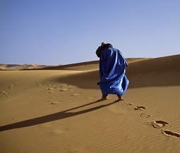

Forums galactiques > Taverne galactique : lieu de discussion informel > Tourné générale
Pages : 1
| Sandor Darhan Réputation à la taverne : 1019  20/09 ETU 22:49 | Score : 2 Détails Un tourbillon entre subitement dans la taverne, la tempete s'arrete au niveau du bars, en sort un homme sombre grand et moche au visage atrocement brulé puant la crasse, le vin, le sang et la mort. Il s'écrie ( déja completement bourré a ce qu'il semble ):
Riche, je suis riche...chose promise chose due PATRON!!!!!!!TOURNE GENERALE ...que chacun commande ce qu'il souhaite, pour moi votre meilleur champ... glouglouglouglouglou(un glou équivaut à l'ingurgitation de 10 bouteilles de champagne) ARRRRHHHHrrrrrrrrrrrrrrrhhhhhhhhhhhhhhhhhhhhhhhhh ...un bien fou... maintenant barman un petit absinthe galactique pour digérer...commandant à la galaxie et a tout ce que vous voulez!!!! | ||
| andeman Réputation à la taverne : 1393  20/09 ETU 22:52 | Score : 0 Détails andeman entra et vit une conaissance sandhor
-vodka pour moi,des shooters s'il vous plait! s'adressant vers sandhor -bien le bonsoir comment vous portez vous? | ||
| Sandor Darhan Réputation à la taverne : 1019 20/09 ETU 22:55 | Score : 1 Détails ...gneurrrrrrrrrk...
...gneurrrrrrrrrrrk... rhooooooooooooooooOOOOOOOOOooooooooo ...faut que j'aille pisser moi..ah c'est vous andeman, tiens bah je reste rien que pour vous, au diable ma vessie, elle peut crevée... ben mec ( andeman t'es mon pote alors je t'appele mec oki??) je suis trop content et donc j'm suis bourré... héhé | ||
| Sandor Darhan Réputation à la taverne : 1019 20/09 ETU 22:57 | Score : 0 Détails ...et (voyant qu'il s'est un peu trop laché) vous andeman comment vous portez vous...
| ||
| andeman Réputation à la taverne : 1393 20/09 ETU 23:07 | Score : 0 Détails se met a rire de bon coeur
-attend moi,je vais rattrapper tout ce retard! -qu'on m'apporte un fut de biere bien frappé!!!moi aussi je me bourre la gueule!!! andeman commence a boire et chante en compagnie de son camarade de murge | ||
| Sandor Darhan Réputation à la taverne : 1019 20/09 ETU 23:14 | Score : 0 Détails ...wai une chanson...
buvons un peu à la santé des amoreux a la santé d'Mansfeld et m....aux bizzzzzzounours a qui on a foutu une rouste... Barman mon verre est vide | ||
| andeman Réputation à la taverne : 1393 20/09 ETU 23:18 | Score : 1 Détails andeman commence a voir trouble,qu'a cela ne tienne,lui et sandhor se murgeront jusqu'a s'envider l'estomac!tandis que sandhar entame une chanson paillarde avec un invité,andeman s'attaque a une bouteille de whisky,ce dernier tente de faire des melanges aussi saugrenues qu'imbuvable,cela n'empeche pas son createur de les gouter,c'est alors que sandhor se met sur une table et entame une gigue sous les hourras d'andeman
-wéééééééééé!!! | ||
| Sandor Darhan Réputation à la taverne : 1019 20/09 ETU 23:24 | Score : 0 Détails ...et c'est la bagarre générale...une comme les soulards les aime tant...tout le monde tape sur tout le monde car plus on se fait mal, plus il faudra ingurgiter des littres d'alcools pour oublier...
apres avoir assommé trois types et pris une dizaine de gnons, tous les protagonistes s'arretent et c'est l'hilarité général ...sauf andeman qui completement murgé continue a se battre contre un adversaire inexistant... BARMAN UNE NOUVELLE TOURNE sur ces mots andeman rejoint le bar | ||
| andeman Réputation à la taverne : 1393 20/09 ETU 23:33 | Score : 1 Détails andeman rejoint le bar non sans trebucher a plusieurs reprises,quand il entend les mots "tournée generale",l'oeil vitreux de l'homme bourré qu'avait andeman s'illuminérent d'un semblant de reaction,et d'une certaine lueur,levant alors sa chopine vide et baragouinant des mots incomprehensible,le barman s'empresse alors de la lui remplir,Andeman boit,et combre un peu plus vers le point de non retour,c'est alors qu'il tente de raconter un blague belge sandhor
he.....ssaa,sananadhar,de sanghaoan,enfin bref,tu connais la...heu...ouais!,tu sssais a quoi on reconnait un belge dans un areopp...areroport?non commence a pouffer -bah....c'est le seul qui donne,a manger aux avions andeman s'ecroule mort de rire | ||
| Sandor Darhan Réputation à la taverne : 1019 21/09 ETU 00:29 | Score : 0 Détails ...hhhhhhhhhhhhhééééééééééééé les mecs ReGARDez andeman y tient meme pas a l'alcooooooooooooooooooooooooooooooo...
BOUM c'en était finit de Sandor pour la soirée!!! | ||
| MunSu Réputation à la taverne : 748  21/09 ETU 00:36 | Score : 1 Détails Alors que sandor, andeman et tous les autres ecumeurs de la galaxie se roulaient par terre dans les flaques de biere, la porte s'ouvre avec violence, ce qui acheva de faire tomber au sol les quelques personnes encore accrochées au bar.
Toutes les tetes se tournent et voient le fils du desert (et ses freres? ah non en fait...) apparaitre sur le seuil dans un tourbillon de sable. Il lève un regard courroucé sur les pochtrons. Comment !! On boit jusqu'a plus soif et on ne m'attends pas? J'espere pour vous que vous m'en avez laissé! Allez patron c'est ma tournée. On va feter ça! feter quoi? On s'en moque! il manquerait plus qu'on ait besoin d'un pretexte! CRAAAC... Un premier fut de biere percé. MunSu se cale entre les joyeux drilles et commence à rattraper son retard... | ||
| Sandor Darhan Réputation à la taverne : 1019 21/09 ETU 01:02 | Score : 0 Détails CRACCC?J'ai entendu cracc?!?
Eh oui c'est Sandor ,que ce bruit si familier ne peut laisser indifférent, que tout le monde s'étonne de voir se lever si rapidement... le voila qui repart pour de nouvelles aventures alcoolisées!!!! | ||
| MunSu Réputation à la taverne : 748 21/09 ETU 01:20 | Score : 0 Détails Sandor !!
oh pardon madame... Sandor!!! Viens par là me gouter ça. C'est une liqueur de chez moi. Très rare... oui monsieur. Enfin c'est pas tant soulever les pierres qui est long, c'est surtout traire les scorpions qui prends un temps fou... Ahh en plus c'est un bon cru, regarde on a l'impression que ça bouge encore. Sympa ici, la deco laisse à desirer mais... ah c'est andeman en fait? t'as raison on va le laisser dormir mais on peut p'tet le decoler du mur non? | ||
| andeman Réputation à la taverne : 1393 21/09 ETU 09:16 | Score : 0 Détails andeman se reveille avec une gueule de bois pas possible et haleine digne d'un chacal de scordun,soudain il voit munsu ralonge a terre avec sandhor,tout deux ayant a la main un breuvage bizarre,et visiblement cela leur a ete fatale,andeman se pose quelque part et reste ainsi quelques instants,histoire de reprendre ses esprits
| ||
| Dantès Réputation à la taverne : 149  21/09 ETU 19:42 | Score : 0 Détails -Une vokda martini, au shaker, pas à la cuillère.
|
Pages : 1
Forums galactiques > Taverne galactique : lieu de discussion informel > Tourné générale